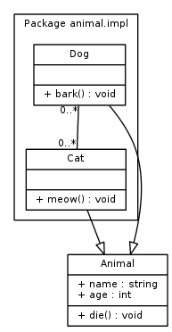

Background: sudo docker run ubuntu:14.04 /bin/echo 'Hello world'
Interactive: sudo docker run -t -i ubuntu:14.04 /bin/bash
Daemonized: sudo docker run -d ubuntu:14.04 /bin/sh -c "while true; do echo hello world; sleep 1; done"
List containers: sudo docker ps
View mapped port: sudo docker port <containerName>
Process information:sudo docker top <contaienrName>
Status information: sudo docker inspect <containerName>
Logs: sudo docker logs <containerName>
Start container: sudo docker start <containername>
Stop container: sudo docker stop <containerName>
Remove container: sudo docker rm <containerName>
-P: Map http ports automatically
-p port:port: Specific http port binding)
-d: Run as deamon
-f: Tail on docker logs
List images: sudo docker images
Get remote image: sudo docker pull <imageName>:<version|latest>
Search remote images: sudo docker search <query>
Tag images: sudo docker tag <imageId> <user/imageName>:<version>
Remove image: sudo docker rmi <user/imageName>:<version>
1.Create container: sudo docker run -t -i <imageName> /bin/bash
2.Make changes
3.Exit bash
4.Commit changes: sudo docker commit -m "<comment>" -a "<author>" <containerID> <user/imageName>
1.Create a dockerfile
2.Write commands
3.Build: sudo docker build -t <user/imageName>:<version> <dockerfile>
"INSTRUCTION statement" General syntax
FROM
MAINTAINER
RUN
